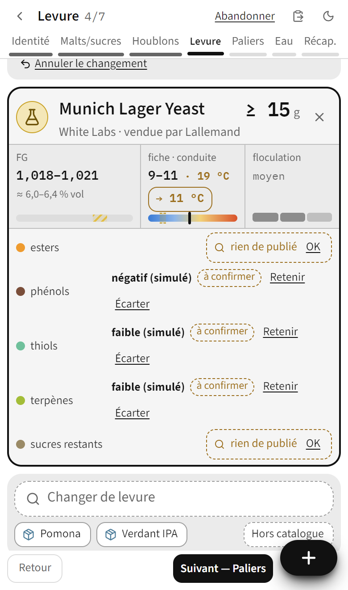

Base : la carte « Ma levure » telle qu'en ligne le 19.11 (tag en-ligne/2026-11-19-tour2), capture du brasseur. Composant réel : port-carnet/src/ui/etapeLevure/MaLevure.tsx. Ses mots : « Il y a énormément de problème, même en terme de fluidité » ; « Pourquoi il y a pas la possibilité d'appeler l'autocomplete de l'agent IA ? ».
